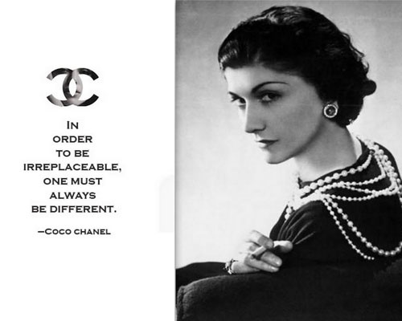
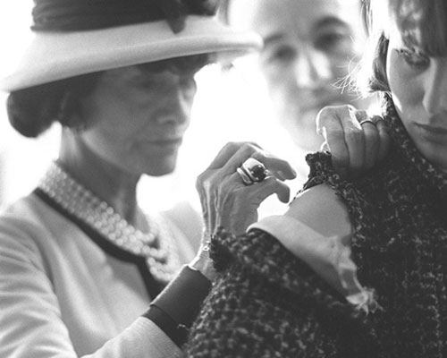

Revolutionizing Fashion

At first, Chanel knows hard times. She is really criticized in Paris, the French designer Paul Poiret makes fun of her saying that she wants to dress women in pajamas.He was teasing her calling her style "poverty deluxe".However, Chanel succeded reaching a peak of fame in the 1920's, she achieved to replace extravagant pre-war fashions with simple confortable clothes.
Swayed by her style, women gradually started to wear trousers and to cut their hair which was not common at that time. In a nutshell, she liberated women from complicated clothes and emancipated them from the bondage of the corset.Instead, she popularized a sportive casual chic style.
